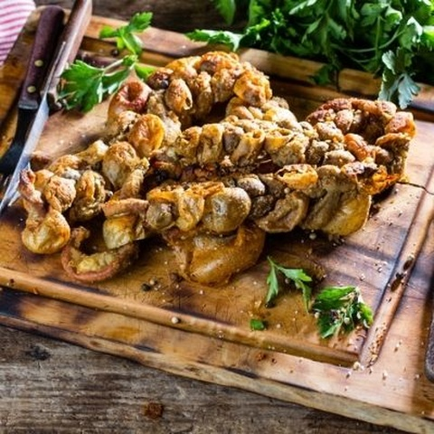

Chunchule

Description
Chunchullo is beef small intestine, which may be grilled or fried.
It is consumed in many Latin American countries.
h3>Ingredients
- 10 pounds frozen chitterlings, thawed and cleaned
- 1 onion, roughly chopped
- 2 teaspoons salt
- 1 teaspoon minced garlic
- S1 teaspoon crushed red pepper flakes
Steps
- Place cleaned chitterlings in a 6-quart pot and cover with cold water.
- Bring to a rolling boil.
- Add onion and season with salt, garlic, and red pepper flakes.
- Simmer until chitterlings are clear to white in color and reach desired tenderness, 3 to 4 hours.